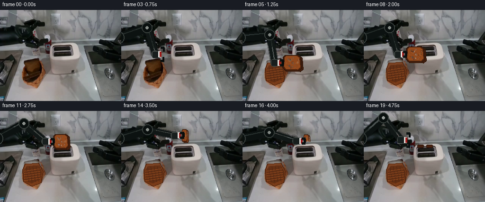
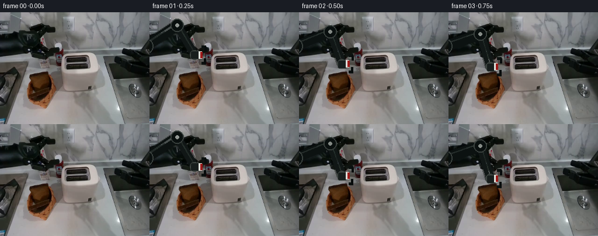

候选 01 · 2026-11-08T17:08:59.965989+00:00 · 点开播放与检查图
inspection.png

transition_check.png

代码变化
--- 上一保存版本
+++ 本次保存版本
@@ -0,0 +1,161 @@
+from pathlib import Path
+import math
+import numpy as np
+from PIL import Image, ImageDraw, ImageFilter
+import artifact_io
+
+ROOT = Path(__file__).resolve().parent
+base_im = Image.open(ROOT/'first_frame.png').convert('RGB')
+base = np.asarray(base_im).copy()
+W,H = base_im.size
+
+# static object geometry observed in the supplied frame
+BREAD_POLY=[(48,111),(55,106),(75,103),(84,109),(88,130),(80,143),(59,145),(50,137)]
+BASKET_POLY=[(47,124),(52,111),(81,109),(91,127),(87,151),(67,159),(49,149)]
+
+def mask_poly(poly, blur=0):
+ m=Image.new('L',(W,H),0); ImageDraw.Draw(m).polygon(poly,fill=255)
+ if blur: m=m.filter(ImageFilter.GaussianBlur(blur))
+ return np.asarray(m)
+
+def fill_texture(arr, mask, x0=0,y0=0):
+ """Plausibly fill a vacated object region from nearby counter texture."""
+ out=arr.copy(); ys,xs=np.where(mask>20)
+ for y,x in zip(ys,xs):
+ sy=min(H-1,max(0, y-18))
+ sx=min(W-1,max(0, x + (18 if x<70 else -34)))
+ c=arr[sy,sx].astype(float)
+ # softly match bright countertop, retaining local camera grain
+ c=.38*c + .62*np.array([174,174,171])
+ out[y,x]=np.clip(c,0,255)
+ # blend only softened interior to avoid a cutout edge
+ soft=np.asarray(Image.fromarray(mask).filter(ImageFilter.GaussianBlur(3)),dtype=float)[...,None]/255
+ return np.uint8(out*soft+arr*(1-soft))
+
+# background after two slices have left the basket: preserve basket rim, replace only bread interior
+breadmask=mask_poly(BREAD_POLY,1)
+clean_base=fill_texture(base,breadmask)
+# Repaint basket so the action remains legible and the container does not disappear.
+clean_im=Image.fromarray(clean_base); d=ImageDraw.Draw(clean_im,'RGBA')
+d.polygon(BASKET_POLY, fill=(118,55,20,225), outline=(84,38,15,255), width=2)
+d.polygon([(50,125),(57,116),(80,114),(88,128),(84,145),(66,152),(52,145)], fill=(94,45,19,220))
+for k in range(5):
+ y=126+k*5; d.line([(51,y),(84,y-5)], fill=(180,93,39,145), width=2)
+for k in range(5):
+ x=55+k*7; d.line([(x,117),(x+5,149)], fill=(58,31,18,130), width=1)
+clean_base=np.asarray(clean_im)
+
+# canonical toast: a rigid, textured square viewed nearly front-on
+TW,TH=45,38
+def make_bread(seed=0):
+ rng=np.random.default_rng(seed)
+ im=Image.new('RGBA',(TW,TH),(0,0,0,0)); dr=ImageDraw.Draw(im,'RGBA')
+ poly=[(4,7),(8,3),(34,2),(40,7),(42,31),(36,36),(8,35),(3,29)]
+ dr.polygon(poly,fill=(77,34,13,255))
+ dr.line(poly+[poly[0]],fill=(49,23,11,255),width=2)
+ inner=[(7,8),(10,5),(32,5),(37,8),(39,28),(34,33),(10,32),(6,27)]
+ dr.polygon(inner,fill=(145,73,29,255))
+ # toast mottling/crumbs
+ for _ in range(30):
+ x=int(rng.integers(8,37)); y=int(rng.integers(7,31)); r=int(rng.integers(1,3))
+ col=(94,43,17,int(rng.integers(35,95))) if rng.random()<.7 else (202,121,55,70)
+ dr.ellipse((x-r,y-r,x+r,y+r),fill=col)
+ return im.filter(ImageFilter.GaussianBlur(.18))
+bread1=make_bread(2); bread2=make_bread(8)
+
+def ease(t):
+ t=max(0,min(1,t)); return t*t*(3-2*t)
+def path_interp(points,t):
+ # points are (time,x,y), piecewise smooth
+ if t<=points[0][0]: return points[0][1:]
+ for a,b in zip(points,points[1:]):
+ if t<=b[0]:
+ q=ease((t-a[0])/(b[0]-a[0])); return (a[1]*(1-q)+b[1]*q,a[2]*(1-q)+b[2]*q)
+ return points[-1][1:]
+
+def draw_shadow(im,xy,wh=(42,10),alpha=45):
+ layer=Image.new('RGBA',(W,H),(0,0,0,0)); ld=ImageDraw.Draw(layer)
+ x,y=xy; ld.ellipse((x-wh[0]/2,y-wh[1]/2,x+wh[0]/2,y+wh[1]/2),fill=(15,13,10,alpha))
+ layer=layer.filter(ImageFilter.GaussianBlur(4)); im.alpha_composite(layer)
+
+def arm_geometry(target):
+ # consistent two-link IK, shoulder is just outside left edge
+ sx,sy=-8,58; tx,ty=target; L1,L2=66,59
+ dx,dy=tx-sx,ty-sy; dist=max(1,math.hypot(dx,dy)); dist=min(dist,L1+L2-1)
+ a=(L1*L1-L2*L2+dist*dist)/(2*dist); h=math.sqrt(max(0,L1*L1-a*a))
+ ux,uy=dx/dist,dy/dist
+ # upper-elbow branch stays over the counter and mimics supplied robot pose
+ ex=sx+a*ux-h*(-uy); ey=sy+a*uy-h*ux
+ return (sx,sy),(ex,ey),(tx,ty)
+
+def draw_arm(im,target,closed=True,angle=0):
+ sh,el,wr=arm_geometry(target)
+ layer=Image.new('RGBA',(W,H),(0,0,0,0)); dr=ImageDraw.Draw(layer,'RGBA')
+ # compact contact shadows under moving rigid arm
+ dr.line([sh,el],fill=(8,10,10,95),width=22)
+ dr.line([el,wr],fill=(8,10,10,100),width=18)
+ # hard stable industrial links and subtle highlights
+ dr.line([sh,el],fill=(12,18,17,255),width=18)
+ dr.line([el,wr],fill=(17,23,22,255),width=14)
+ dr.line([(sh[0],sh[1]-4),(el[0],el[1]-4)],fill=(52,61,58,150),width=3)
+ dr.line([(el[0],el[1]-3),(wr[0],wr[1]-3)],fill=(50,60,57,140),width=2)
+ for p,r in [(sh,14),(el,11),(wr,8)]:
+ dr.ellipse((p[0]-r,p[1]-r,p[0]+r,p[1]+r),fill=(10,16,15,255),outline=(56,63,60,255),width=2)
+ dr.ellipse((p[0]-3,p[1]-3,p[0]+3,p[1]+3),fill=(155,161,156,210))
+ # wrist module plus white/red collar retained from source robot's visual identity
+ tx,ty=wr
+ dr.rounded_rectangle((tx-7,ty-7,tx+9,ty+7),3,fill=(24,30,29,255),outline=(68,74,70,255))
+ dr.rectangle((tx+7,ty-6,tx+12,ty+6),fill=(224,224,219,255))
+ dr.rectangle((tx+10,ty-5,tx+13,ty+5),fill=(156,26,25,255))
+ # parallel-jaw left gripper, vertically oriented around bread edge
+ gap=5 if closed else 14
+ dr.line([(tx+12,ty-gap),(tx+19,ty-gap)],fill=(12,17,16,255),width=5)
+ dr.line([(tx+12,ty+gap),(tx+19,ty+gap)],fill=(12,17,16,255),width=5)
+ dr.line([(tx+18,ty-gap),(tx+18,ty-gap+8)],fill=(8,12,12,255),width=4)
+ dr.line([(tx+18,ty+gap),(tx+18,ty+gap-8)],fill=(8,12,12,255),width=4)
+ im.alpha_composite(layer)
+
+# sequence: acquire both stacked slices, lift/translate above toaster, insert, release and withdraw.
+# gripper target is at left edge of carried slices.
+points=[(0.00,80,64),(0.14,72,93),(0.28,67,112),(0.39,70,96),(0.58,96,64),(0.72,113,51),(0.82,113,62),(0.90,113,70),(1.00,78,61)]
+frames=[]
+for i in range(20):
+ if i==0:
+ frames.append(base.copy()); continue
+ t=i/19
+ # fade from source's original arm into exact same workspace clean layer only once arm starts moving
+ arr=base.copy() if t<.16 else clean_base.copy()
+ im=Image.fromarray(arr).convert('RGBA')
+ gx,gy=path_interp(points,t)
+ carrying=(t>=.26 and t<.87)
+ # bread remains in basket before grasp; both slices move together thereafter
+ if t<.26:
+ # preserve source bread by using original background; after initial approach explicitly show two slices
+ if t>=.16:
+ im.alpha_composite(bread2,(48,107)); im.alpha_composite(bread1,(50,103))
+ elif carrying:
+ # carried stack is rigidly coupled to gripper. It rotates edge-on above slots to fit.
+ q=ease((t-.50)/.24)
+ bw=int(round(TW*(1-q)+13*q)); bh=int(round(TH*(1-q)+31*q))
+ # at insertion, progressively hide lower part inside toaster slot
+ b2=bread2.resize((bw,bh),Image.Resampling.BICUBIC)
+ b1=bread1.resize((bw,bh),Image.Resampling.BICUBIC)
+ bx=int(gx+15); by=int(gy-bh/2)
+ if t>.76:
+ visible=max(7,int(bh*(1-ease((t-.76)/.14)*.72)))
+ b2=b2.crop((0,0,bw,visible)); b1=b1.crop((0,0,bw,visible))
+ draw_shadow(im,(bx+bw/2, min(129,by+bh+8)),(max(18,bw),7),30)
+ im.alpha_composite(b2,(bx+3,by+2)); im.alpha_composite(b1,(bx,by))
+ else:
+ # two narrow browned top edges visibly seated in the two slots
+ dr=ImageDraw.Draw(im,'RGBA')
+ if t>=.87:
+ dr.rounded_rectangle((113,71,126,77),2,fill=(68,31,15,255),outline=(37,20,13,255),width=1)
+ dr.rounded_rectangle((132,71,145,77),2,fill=(74,33,15,255),outline=(37,20,13,255),width=1)
+ closed = (t>=.24 and t<.88)
+ draw_arm(im,(gx,gy),closed)
+ frames.append(np.asarray(im.convert('RGB'),dtype=np.uint8))
+frames=np.stack(frames)
+# contract invariant
+frames[0]=base
+artifact_io.save(frames,ROOT)
命令 7 · 2026-11-08T17:08:58.906796+00:00/bin/bash -lc "cat > generate.py <<'PY'
from pathlib import Path
import math
import numpy as np
from PIL import Image, ImageDraw, ImageFilter
import artifact_io
ROOT = Path(__file__).resolve().parent
base_im = Image.open(ROOT/'first_frame.png').convert('RGB')
base = np.asarray(base_im).copy()
W,H = base_im.size
# static object geometry observed in the supplied frame
BREAD_POLY=[(48,111),(55,106),(75,103),(84,109),(88,130),(80,143),(59,145),(50,137)]
BASKET_POLY=[(47,124),(52,111),(81,109),(91,127),(87,151),(67,159),(49,149)]
def mask_poly(poly, blur=0):
m=Image.new('L',(W,H),0); ImageDraw.Draw(m).polygon(poly,fill=255)
if blur: m=m.filter(ImageFilter.GaussianBlur(blur))
return np.asarray(m)
def fill_texture(arr, mask, x0=0,y0=0):
\"\"\"Plausibly fill a vacated object region from nearby counter texture.\"\"\"
out=arr.copy(); ys,xs=np.where(mask>20)
for y,x in zip(ys,xs):
sy=min(H-1,max(0, y-18))
sx=min(W-1,max(0, x + (18 if x<70 else -34)))
c=arr[sy,sx].astype(float)
# softly match bright countertop, retaining local camera grain
c=.38*c + .62*np.array([174,174,171])
out[y,x]=np.clip(c,0,255)
# blend only softened interior to avoid a cutout edge
soft=np.asarray(Image.fromarray(mask).filter(ImageFilter.GaussianBlur(3)),dtype=float)[...,None]/255
return np.uint8(out*soft+arr*(1-soft))
# background after two slices have left the basket: preserve basket rim, replace only bread interior
breadmask=mask_poly(BREAD_POLY,1)
clean_base=fill_texture(base,breadmask)
# Repaint basket so the action remains legible and the container does not disappear.
clean_im=Image.fromarray(clean_base); d=ImageDraw.Draw(clean_im,'RGBA')
d.polygon(BASKET_POLY, fill=(118,55,20,225), outline=(84,38,15,255), width=2)
d.polygon([(50,125),(57,116),(80,114),(88,128),(84,145),(66,152),(52,145)], fill=(94,45,19,220))
for k in range(5):
y=126+k*5; d.line([(51,y),(84,y-5)], fill=(180,93,39,145), width=2)
for k in range(5):
x=55+k*7; d.line([(x,117),(x+5,149)], fill=(58,31,18,130), width=1)
clean_base=np.asarray(clean_im)
# canonical toast: a rigid, textured square viewed nearly front-on
TW,TH=45,38
def make_bread(seed=0):
rng=np.random.default_rng(seed)
im=Image.new('RGBA',(TW,TH),(0,0,0,0)); dr=ImageDraw.Draw(im,'RGBA')
poly=[(4,7),(8,3),(34,2),(40,7),(42,31),(36,36),(8,35),(3,29)]
dr.polygon(poly,fill=(77,34,13,255))
dr.line(poly+[poly[0]],fill=(49,23,11,255),width=2)
inner=[(7,8),(10,5),(32,5),(37,8),(39,28),(34,33),(10,32),(6,27)]
dr.polygon(inner,fill=(145,73,29,255))
# toast mottling/crumbs
for _ in range(30):
x=int(rng.integers(8,37)); y=int(rng.integers(7,31)); r=int(rng.integers(1,3))
col=(94,43,17,int(rng.integers(35,95))) if rng.random()<.7 else (202,121,55,70)
dr.ellipse((x-r,y-r,x+r,y+r),fill=col)
return im.filter(ImageFilter.GaussianBlur(.18))
bread1=make_bread(2); bread2=make_bread(8)
def ease(t):
t=max(0,min(1,t)); return t*t*(3-2*t)
def path_interp(points,t):
# points are (time,x,y), piecewise smooth
if t<=points[0][0]: return points[0][1:]
for a,b in zip(points,points[1:]):
if t<=b[0]:
q=ease((t-a[0])/(b[0]-a[0])); return (a[1]*(1-q)+b[1]*q,a[2]*(1-q)+b[2]*q)
return points[-1][1:]
def draw_shadow(im,xy,wh=(42,10),alpha=45):
layer=Image.new('RGBA',(W,H),(0,0,0,0)); ld=ImageDraw.Draw(layer)
x,y=xy; ld.ellipse((x-wh[0]/2,y-wh[1]/2,x+wh[0]/2,y+wh[1]/2),fill=(15,13,10,alpha))
layer=layer.filter(ImageFilter.GaussianBlur(4)); im.alpha_composite(layer)
def arm_geometry(target):
# consistent two-link IK, shoulder is just outside left edge
sx,sy=-8,58; tx,ty=target; L1,L2=66,59
dx,dy=tx-sx,ty-sy; dist=max(1,math.hypot(dx,dy)); dist=min(dist,L1+L2-1)
a=(L1*L1-L2*L2+dist*dist)/(2*dist); h=math.sqrt(max(0,L1*L1-a*a))
ux,uy=dx/dist,dy/dist
# upper-elbow branch stays over the counter and mimics supplied robot pose
ex=sx+a*ux-h*(-uy); ey=sy+a*uy-h*ux
return (sx,sy),(ex,ey),(tx,ty)
def draw_arm(im,target,closed=True,angle=0):
sh,el,wr=arm_geometry(target)
layer=Image.new('RGBA',(W,H),(0,0,0,0)); dr=ImageDraw.Draw(layer,'RGBA')
# compact contact shadows under moving rigid arm
dr.line([sh,el],fill=(8,10,10,95),width=22)
dr.line([el,wr],fill=(8,10,10,100),width=18)
# hard stable industrial links and subtle highlights
dr.line([sh,el],fill=(12,18,17,255),width=18)
dr.line([el,wr],fill=(17,23,22,255),width=14)
dr.line([(sh[0],sh[1]-4),(el[0],el[1]-4)],fill=(52,61,58,150),width=3)
dr.line([(el[0],el[1]-3),(wr[0],wr[1]-3)],fill=(50,60,57,140),width=2)
for p,r in [(sh,14),(el,11),(wr,8)]:
dr.ellipse((p[0]-r,p[1]-r,p[0]+r,p[1]+r),fill=(10,16,15,255),outline=(56,63,60,255),width=2)
dr.ellipse((p[0]-3,p[1]-3,p[0]+3,p[1]+3),fill=(155,161,156,210))
# wrist module plus white/red collar retained from source robot's visual identity
tx,ty=wr
dr.rounded_rectangle((tx-7,ty-7,tx+9,ty+7),3,fill=(24,30,29,255),outline=(68,74,70,255))
dr.rectangle((tx+7,ty-6,tx+12,ty+6),fill=(224,224,219,255))
dr.rectangle((tx+10,ty-5,tx+13,ty+5),fill=(156,26,25,255))
# parallel-jaw left gripper, vertically oriented around bread edge
gap=5 if closed else 14
dr.line([(tx+12,ty-gap),(tx+19,ty-gap)],fill=(12,17,16,255),width=5)
dr.line([(tx+12,ty+gap),(tx+19,ty+gap)],fill=(12,17,16,255),width=5)
dr.line([(tx+18,ty-gap),(tx+18,ty-gap+8)],fill=(8,12,12,255),width=4)
dr.line([(tx+18,ty+gap),(tx+18,ty+gap-8)],fill=(8,12,12,255),width=4)
im.alpha_composite(layer)
# sequence: acquire both stacked slices, lift/translate above toaster, insert, release and withdraw.
# gripper target is at left edge of carried slices.
points=[(0.00,80,64),(0.14,72,93),(0.28,67,112),(0.39,70,96),(0.58,96,64),(0.72,113,51),(0.82,113,62),(0.90,113,70),(1.00,78,61)]
frames=[]
for i in range(20):
if i==0:
frames.append(base.copy()); continue
t=i/19
# fade from source's original arm into exact same workspace clean layer only once arm starts moving
arr=base.copy() if t<.16 else clean_base.copy()
im=Image.fromarray(arr).convert('RGBA')
gx,gy=path_interp(points,t)
carrying=(t>=.26 and t<.87)
# bread remains in basket before grasp; both slices move together thereafter
if t<.26:
# preserve source bread by using original background; after initial approach explicitly show two slices
if t>=.16:
im.alpha_composite(bread2,(48,107)); im.alpha_composite(bread1,(50,103))
elif carrying:
# carried stack is rigidly coupled to gripper. It rotates edge-on above slots to fit.
q=ease((t-.50)/.24)
bw=int(round(TW*(1-q)+13*q)); bh=int(round(TH*(1-q)+31*q))
# at insertion, progressively hide lower part inside toaster slot
b2=bread2.resize((bw,bh),Image.Resampling.BICUBIC)
b1=bread1.resize((bw,bh),Image.Resampling.BICUBIC)
bx=int(gx+15); by=int(gy-bh/2)
if t>.76:
visible=max(7,int(bh*(1-ease((t-.76)/.14)*.72)))
b2=b2.crop((0,0,bw,visible)); b1=b1.crop((0,0,bw,visible))
draw_shadow(im,(bx+bw/2, min(129,by+bh+8)),(max(18,bw),7),30)
im.alpha_composite(b2,(bx+3,by+2)); im.alpha_composite(b1,(bx,by))
else:
# two narrow browned top edges visibly seated in the two slots
dr=ImageDraw.Draw(im,'RGBA')
if t>=.87:
dr.rounded_rectangle((113,71,126,77),2,fill=(68,31,15,255),outline=(37,20,13,255),width=1)
dr.rounded_rectangle((132,71,145,77),2,fill=(74,33,15,255),outline=(37,20,13,255),width=1)
closed = (t>=.24 and t<.88)
draw_arm(im,(gx,gy),closed)
frames.append(np.asarray(im.convert('RGB'),dtype=np.uint8))
frames=np.stack(frames)
# contract invariant
frames[0]=base
artifact_io.save(frames,ROOT)
PY
python3 generate.py
python3 - <<'PY'
from PIL import Image
im=Image.open('inspection.png'); print(im.size)
import numpy as np
z=np.load('pixels.npz')['pixels']; print(z.shape,z.dtype)
print('first identical',np.array_equal(np.asarray(Image.open('frames/00.png')),np.asarray(Image.open('first_frame.png'))))
PY"exit 0